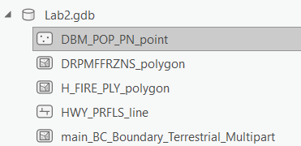
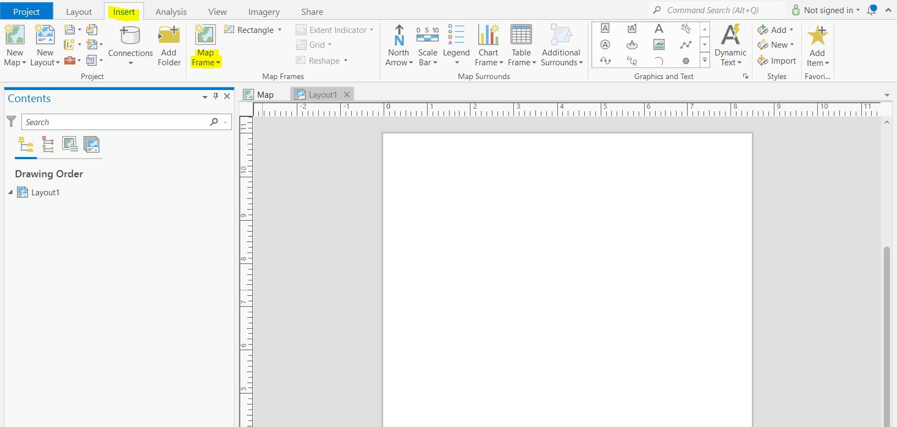
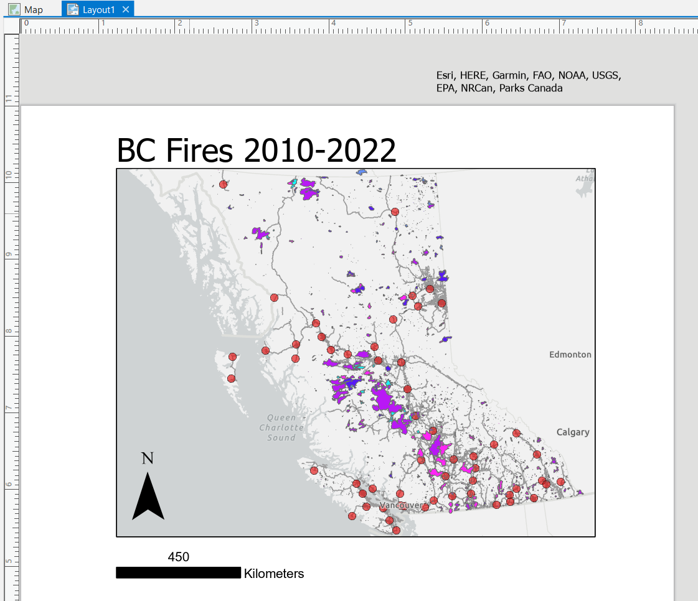

Lab 2 Geodatabases, data handling, and mapping
Written by Hana Travers-Smith
Lab Overview
The aim of this lab is to design and build a geodatabase, as well as organize spatial data within it. We will review tools for cleaning raster and vector data. Finally students will learn how to create and export a map using good cartographic principles.
Task 1: Building a geodatabase and organizing data
In this task, we will review what a geodatabase contains and learn how to design your own geodatabase based on project requirements and objectives in ArcGIS Pro. Geodatabases allow you to store many spatial data layers of different types in one place. You can edit data related to one project within a geodatabse and then easily share it with other people.
Step 1: Start ArcGIS Pro. Under the New header, select Catalog. Name the project “Lab2”. When ArcGIS Pro opens a new Catalog window, navigate to your Lab2 folder.

Step 2: Download the zipped (.zip) lab data from GitHub, unzip it, and move it into your Lab2 project folder, which by default is C:\Users\YourUsername\Documents\ArcGIS\Projects\Lab2.
Step 3: Open the Catalog pane by clicking View > Catalog Pane. Under the folders tab you should see the folder with your lab 2 project. You have six shapefiles in the data folder. Three different kinds of icons are shown in front of shapefile names. These indicate what type of data (point, line, or polygon) is stored within a shapefile. For example, the DBM_POP_PN_points shapefile is composed of points, the HWY_PRFLS_line shapefile is composed of lines, and the main_BC_Boundary_terrestrial_multipart shapefile is a polygon.

Step 4: Open a new Map. Under the Insert tab on the top ribbon, click New Map. Before adding any layer, you need to make sure that the coordinate system of the map gives an accurate projection of your study area. For this lab we will focus on BC, so we will use the coordinate system that best reproduces BC. In the Map interface, right-click “Map” in the contents, select properties, and in the pop-up window, select Coordinate Systems. Change the coordinate system to “NAD 1983 BC Environment Albers”.

Step 5: By default, the Lab2.gdb geodatabase created with the new project is set as the “default geodatabase”. This means that whenever you run a tool or search for data, ArcGIS Pro will automatically default to the location of this geodatabase unless you specify otherwise. If you navigate to Project > Databases in the Contents pane, you should see a geodatabase with a little house. The house indicates which geodatabase is set as the default geodatabase for the project. Only one geodatabase can be the default at any given time.
Next, we will import our data into the Lab2 geodatabase.
Step 6: Right-click the lab2.gdb in Catalog, select import, then select Feature Class(es). Click the folder button and navigate to the Lab 2 data folder and select each layer, then click “Run”.

Once all the data is in the Lab2 geodatabase it should look like the following.

Step 7: Drag and drop all the data from the geodatabase to the map. You may notice that the names of these files are not in a uniform format, and some words may be abbreviated. This can cause some inconvenience when dealing with data from different sources. Therefore, it is necessary to format the data names to be processed uniformly to improve efficiency. In general, you can standardize the names of data according to your preferences and further explain the meaning of the names through a data dictionary or metadata.
You can rename layers in your map by right-clicking it in the Contents pane and selecting properties, then change the name in the general tab. Note that this does not change the name of the original data. Rename each of the layers to be more descriptive and for easier organization of your map.
When you name your data, it is good practice to use underscores (_) instead of spaces.
Q1: Based on the filenames and attributes of each layer, choose a name you think is most appropriate for each shapefile from the following list: Canada_Cities, Historical_fire, highways, BC_boundary, BC_fire_districts.
Take a screenshot of the Catalog pane (right side of screen) showing your home folder and the Lab 2 geodatabase with all of the required layers
Task 2: Vector Data Processing
Step 1: Next we will practice processing vector data contained in the new geodatabase. It is good practice to copy and edit data within a geodatabase so that the original data does not get altered accidentally.
First, you will notice that the Canada_cities layer contains cities across all of Canada. We will clip this layer to the BC boundaries. On the top ribbon click View > Geoprocessing > search for the Clip tool. In the Input Features or Dataset field select the layer you want to clip. In the Clip Features field select the layer that you want to clip the input features to. Name the new layer BC_cities and save it to the Lab 2 geodatabse.
Q2: What layer did you use as the Input Features and Clip Features?
Step 2: Next, we will create a new shapefile of fires that occurred after 2010. Right-click on the “Historical_fires” layer in the Contents pane, select “Data” and then select “Export Features”.
The first two lines in the opened dialog box are already filled in automatically. Name the exported file as “Historical_fires_2010”. Then, select “FIRE_YEAR” in the drop-down list below, then select “is greater than or equal to”, and select “2010”. Click “OK”.
A new point feature class appears in your geodatabase, which you may need to refresh to see. It is also automatically added to the contents pane, and you can right-click on it and select the attribute table to view the new data in detail.

Open the attribute table of the new 2010 fires layer. You can generate simple summary statistics for each attribute by right-clicking on a column > Statistics. You can also order attributes from largest to smallest by right clicking on a column > Sort Descending (Sort ascending sorts smallest to largest). Use these tools to answer the following questions.
Q5: What year had the most fires, and how many were there?
We can also Summarize one attribute by another. Right-click on the FIRE_YEAR column in the Historical fires 2010 attribute table, then select Summarize. In the Field drop-down menu select SIZE_HA and set Statistic type to Sum. Click OK.
This will create a new attribute table at the bottom of the Contents Pane, that shows total burned area for each year in hectares.
Q6: What year had the highest burned area? How many hectares were burned?
Step 3: Open the attribute table of the BC_fire_districts layer. The MFFRCNTRNM attribute (very helpfully named), contains the name of each administrative fire centre. In the next step, we will spatially join this information to the BC_Cities layer, so that each city has an attribute showing which fire district it is in.
Right click on the BC_Cities layer > Joins and Relates > Spatial Join. Set the fire districts layer as the Join Features and name the new feature class BC_cities_join. Set Join Operation to Join one to one. This will join one city to one fire district. Scroll through the Match Options. These determine how the target features are matched to the join features. Select Within, this will join cities with the fire district they are completely within. Click OK.
Q7: What fire centre and fire zone is the town of Merrit located in?
Use the tools from this section to conduct your own analysis and answer the following questions:
Q8: Which fire centre instersects with the most fires from 2010 onwards? How many total fires were there? (HINT: Think carefully about the Join Operation and Match Options.)
Q9: Which fire centre had the highest total burned area in ha? The highest mean fire size? (Exclude the Null result, as this represents two fires that were mapped outside of the BC boundaries.)
Q10: Do you see any patterns in the total annual burned area between 1920 and the present day? Do some research and discuss what do you think could be driving these patterns. Include a Line Chart to support your answer. Answer in less than 200 words. (HINT: To answer this question first create a summary table, then review Lab 1 for instructions on how to create a Line Chart using the data from this table.)
Task 3: Create a map
In this task we will use the spatial layers we generated in the previous step to create a map showing good cartographic principles.
Step 1: First we will assemble all the required layers in the Map. Make sure you have the following layers loaded in the Contents pane (remove all other layers by right-clicking > Remove:
- Historical Fires (2010 onwards)
- BC highways
- BC cities
Change the symbology of the historical fires polygon so that fires are color coded by the FIRE_YEAR attribute. Choose an appropriate color scheme to show which fires are most recent. You may also change the symbology of the highwats and cities layers.
Next, change the basemap using Map (top ribbon) > Basemap. Experiment with the different options and pick one that is aesthetically pleasing to you.
Step 2: Once you have set the basemap and symbology for all the layers click Insert > New Layout. Then choose the size of the layout. For compatibility with most printers select Letter 8.5x11. This will open a new Layout window where you will construct your final map.

In the new Layout, select Insert > Map Frame. Select Map1, then drag and draw where the data will be displayed on the page. Leave room on the sides for latitude/longitude labels.
Once the map extent is drawn, you can zoom in/out and reposition the map within the map frame by right clicking on Map Frame in the Contents pane > Activate. Adjust the Map Frame so that you can see the extent of BC. When you are done click the back arrow to go back to the layout.
Step 3: Every map you create should have the following elements:
- Scale bar
- North arrow
- Legend
- Title
For this lab we will also include an inset map, although this is not always necessary.
Your final map will also be graded based on the clarity of the layout, so take your time to make a good looking map!
First, add a scale bar and north arrow in the Insert tab (top ribbon). Use the drop down arrows to select a style, you can also customize the map elements by right clicking on them in the Contents pane > Properties.

Open the scale bar properties and change the Map Units and Label Text from Miles to Kilometers. Examine the other options in this tab and experiment with changing font size, the color or the bar, etc.
Next, add a title using the add text button.
Next, we will remove the ESRI basemap credits from the map. ESRI does not let you remove them completely, but we can redraw them outside the layout so they don’t get plotted. Insert > Dynamic Text > Service Layer Credits. Move the credits outside the layout extent.
Your layout should now look something like the following:

Step 4: Next, insert a legend. You can rename the items in the legend by renaming the layers in the Contents pane. Ensure all the layers are displayed in the legend and have descriptive titles. Open the Legend properties and experiment with the customization options. Here is a great resource for some of these options: https://www.esri.com/arcgis-blog/products/arcgis-pro/mapping/tips-and-tricks-for-working-with-legends-in-arcgs-pro/ Legend customization in ArcGis Pro can be confusing and unintuitive! If you are struggling to find the right box/menu to edit a specific part of the legend, you can right-click on the legend > convert to graphics. This will separate each part of the legend into editibale chunks, and can be helpful for adjusting text size of different headings and labels and for resizing elements of the legend.
Here is an example legend (note that yours does not have to look exactly the same):

Step 5: Finally, we will add an inset map to show where our data is in relation to the rest of Canada. Insert > New Map. Select a different basemap than the main map. Go back to the Layout , insert a new Map Frame and Select Map1. Rightclick on the new Map Frame 1 in the Contents > Activate. Re-position the inset map to show the extent of Canada.
Click on Map Frame 1 then in the top ribbon select Extent Indicator > Map Frame (this is the BC fire map.) This will add a box on the inset map showing the extent of the BC fires data.

Step 6: You are now ready to export the final map! Go to Share on the top ribbon > Export Layout.
Save the map a PNG (easier to copy and paste in a Word document) or PDF in a folder you will be able to find. Make sure the Resolution is set to at least 300 DPI.
Include your map in the final deliverables.